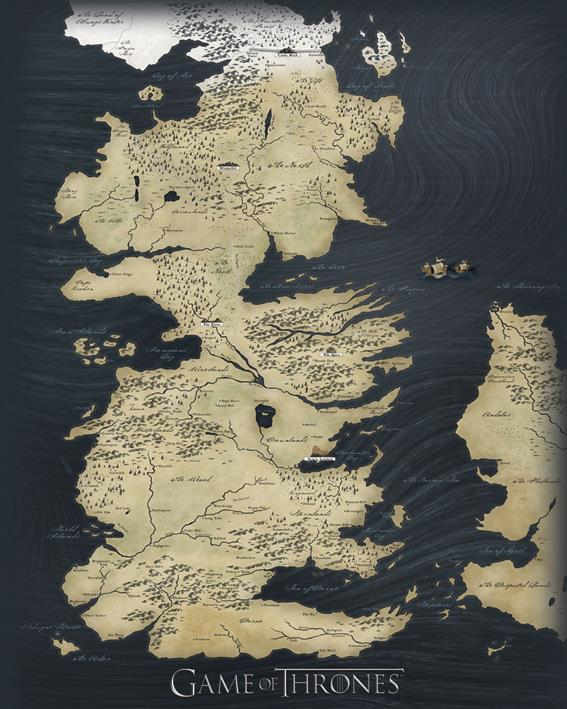

Svet zmajeva, mačeva i izdaje – upoznaj priču koja je promenila televiziju.
*Game of Thrones* je epska fantazija zasnovana na romanima Džordža R. R. Martina. Serija prati sukobe plemićkih kuća koje se bore za kontrolu nad Železnim prestolom, dok drevna pretnja dolazi sa Severnog zida. Serija je poznata po svojim šokantnim obrtima, dubokim likovima i raskošnoj produkciji.
Izgnana princeza koja postaje "Majka zmajeva". Njena priča je putovanje od bespomoćne naslednice do ambiciozne vladarke koja želi da oslobodi svet.
Nezakoniti sin Neda Starka, poznat po svojoj časti i lojalnosti. Njegovo poreklo skriva veliku tajnu koja menja tok istorije Westerosa.
Najmlađi član porodice Lannister. Njegova oštroumnost, snalažljivost i oštar jezik ga vode od izopćenika do kraljevog savetnika.
Westeros je dom mnogim plemićkim kućama, od kojih svaka ima svoju istoriju, simbol i moto. U nastavku su najpoznatije kuće koje oblikuju sudbinu kontinenta.
Plemstvo Severa, poznati po svojoj časti i lojalnosti. Njihov moto: "Zima dolazi."
Bogata kuća sa sedištem u Rtu Kasterlija. Poznati po frazi: "Lannister uvek plaća svoje dugove."
Potomci drevne Valyrie, vladari zmajeva i bivši kraljevi Westerosa. Moto: "Vatra i krv."
Ratnici iz Olujne zemlje koji su osvojili presto. Moto: "Naš je gnev."
Klikni na mapu za uvećani prikaz.
